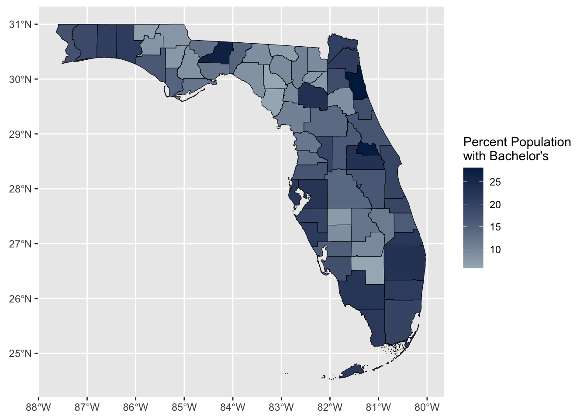
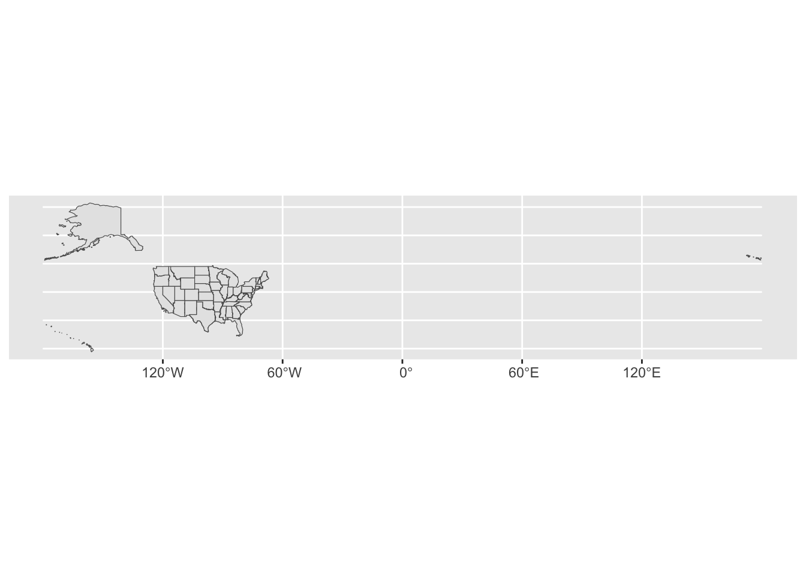
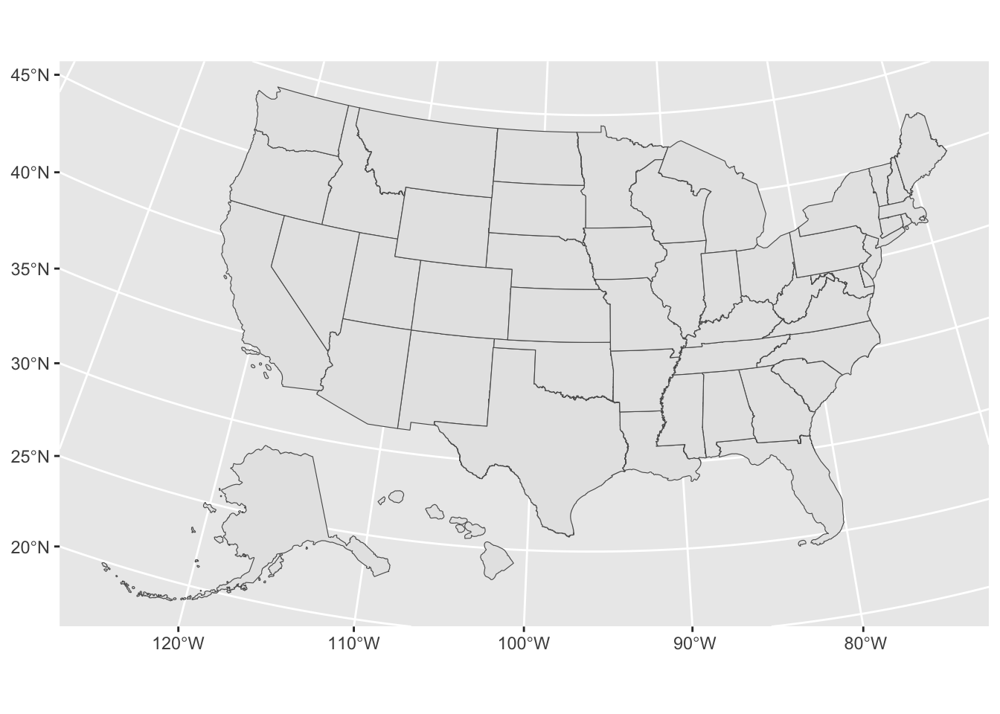
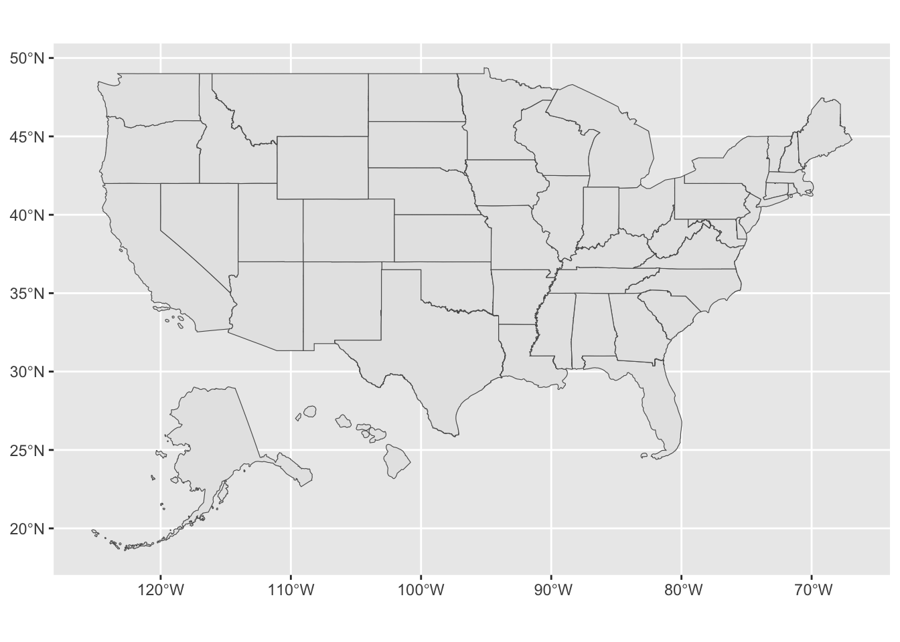
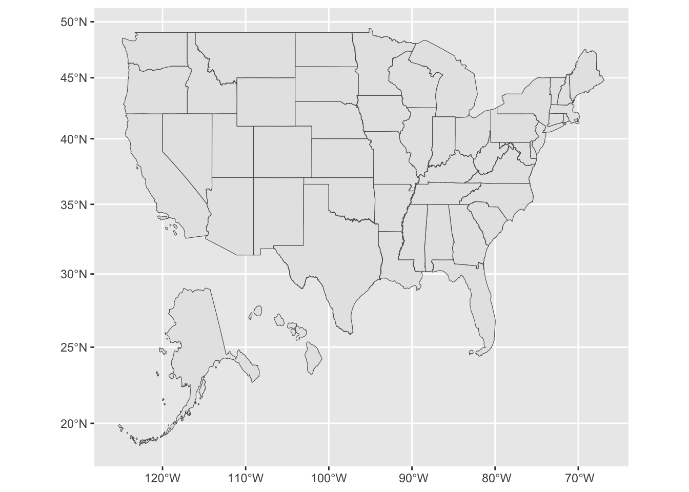

Note from BS: This lesson was written and taught by guest lecturer, Matt Capaldi, University of Florida PhD student and course TA for Spring 2023. I’m very excited to share this space with others!
In today’s lesson we are going to learn how to make basic maps in a template/format that is highly applicable for educational research. Along the way, we are also going to touch on using Application Programming Interfaces (APIs) in R and some very fundamental aspects of spatial data.
For today’s lesson we will need tidyverse, sf (a package that handles spatial data), tidycensus (a package that downloads census data and some spatial data), and tigris (a package that downloads additional spatial data and can make some key spatial transformations).
We already have tidyverse, so be sure to install the others if you don’t have them already:
── Attaching core tidyverse packages ──────────────────────── tidyverse 2.0.0 ──
✔ dplyr 1.1.4 ✔ readr 2.1.4
✔ forcats 1.0.0 ✔ stringr 1.5.1
✔ ggplot2 3.4.4 ✔ tibble 3.2.1
✔ lubridate 1.9.3 ✔ tidyr 1.3.0
✔ purrr 1.0.2
── Conflicts ────────────────────────────────────────── tidyverse_conflicts() ──
✖ dplyr::filter() masks stats::filter()
✖ dplyr::lag() masks stats::lag()
ℹ Use the conflicted package (<http://conflicted.r-lib.org/>) to force all conflicts to become errors
library(sf)
Linking to GEOS 3.11.0, GDAL 3.5.3, PROJ 9.1.0; sf_use_s2() is TRUE
library(tidycensus)library(tigris)
To enable caching of data, set `options(tigris_use_cache = TRUE)`
in your R script or .Rprofile.
Reading in Data
One of the great advantages of using APIs for mapping is that we download spatial data directly into R instead of having to download and handle these quite large files through our computer. If we weren’t using an API or wanted to plot some spatial data not available through one, we would need to find and download a shapefile folder containing a selection of files, then read in the one ending in *.shp — something like this below:
## ---------------------------## example of shapefile read## ---------------------------## pseudo code (won't run!)df <-read_sf(file.path("<Data-Folder>", "<Folder-You-Downloaded>", "<Shapefile-Name>.shp"))
These shapefiles can sometimes be hard to find, take up a lot of space on our computer (especially if they are overly detailed for our needs), and make it much harder to share our project with others for reproducibility. That is why we are going to use an API.
Setting up APIs and tidycensus
So what exactly is an API? In short, think of it as a way of R going to a website/database and pulling data directly from the server-side or backend, without our having to ever interact with the website directly. (Note from BS: we avoid point-click at all costs!) We are going to use the API tidycensus today, but all APIs operate on the same basic idea.
Tidycensus is, in my opinion, one of the easiest APIs to get set up and use in R. Most APIs require that you use some kind of key that identifies you as an authorized user. Typically you need to set up the key the first time you use the API, but helpfully, it’s usually possible to store the key on your computer for all future use (think of the way we initially set up GitHub and then it worked without needing to go through that process again — the good news is that API keys are way easier to set up). Most keys are free to obtain and use. If you were using an API to access a private database such as Google Maps, you might need to pay for your key to have access or on a sliding scale depending on how much you use it. But because we are using Census data, which is freely available to the public, there’s no charge.
Hopefully, most of you were able to get your Census API key before class, but if anyone needs a reminder,
enter your organization name (University of Florida)
enter your email.
You will quickly receive an email with your API key, which you will need below.
To set up tidycensus for the first time, we first need to set our API key. The tidycensus library makes this much easier than many APIs by having a built-in function that you can use to save your API key to your computer. Simply place your API key in the <> of the code below. The install option means it will save the API key for future use, so you will not need to worry about this step again.
## ---------------------------## set API key## ---------------------------## you only need to do this once: replace everything between the## quotes with the key in the email you received#### eg. census_api_key("XXXXXXXXXXXXXXXXXX", install = T)census_api_key("<Your API Key Here>", install = T)
Now that this is set up, we are ready to start using tidycensus — yay!
Reading in data with tidycensus
There are five main tidycensus functions that you can use to call in data, with each calling data from a different source operated by the US Census Bureau. For today’s lesson we are going to use get_acs(), which collects data from the American Community Survey (regular sampled surveys of demographic data across the US). There are a selection of other functions to collect data from different sources within the Census; the most useful ones for us start with get_. You can see more info here.
We are going to assign <- the data we pull down into the object df_census:
## ---------------------------## first data pull## ---------------------------df_census <-get_acs(geography ="county",state ="FL",year =2021,variables ="DP02_0065PE", # Pop >=25 with Bachelorsoutput ="wide",geometry =TRUE)
Getting data from the 2017-2021 5-year ACS
Downloading feature geometry from the Census website. To cache shapefiles for use in future sessions, set `options(tigris_use_cache = TRUE)`.
Using the ACS Data Profile
Let’s walk through each element of this command in turn:
geography = "county" is telling the function to get estimates (and spatial data later) at the county level; this could also be "state", for example, to get state level data.
state = "FL" is telling the function to get data only for the state of Florida. You could put a group of states with c(), use full state names, or use FIPS codes — tidycensus is flexible. If you want a narrower set of data, you could also add county =, which works in a similar way. For example, if you added county = "Alachua", you would only get county-level data for Alachua County, Florida.
year = 2021 is telling the function to pull data for the survey year 2021. For ACS, this will be the survey set ending in that year. Keep in mind that some data are not available for every year. For example, data from the full decennial census are only available for 2010 or 2020.
variables = "DP02_0065PE" is telling the function to pull the variable coded "DP02_0065PE", which is the percentage of the population older than 25 with a Bachelor’s degree. This is the only tricky part of using tidycensus: understanding census API’s variable names. Let me breakdown what we are calling here:
DP02_0065
This is the main variable code the census uses. You can call this by using the load_variables() command, but doing so creates a massive table in R that is hard to navigate through. An easier way is to go the census API’s list of variables for the dataset you are using, which for the 2021 ACS is here (change the years/data sources as needed for other surveys).
In here you can crtl-f or cmd-f search for the variable you are looking for. For this variable we could search “bachelor,” which will highlight all the variables that have “bachelor” in the title. Find the variable you want and copy the name.
PE
You will notice there are multiple DP02_0065 variables, these are the same underlying variable, but in different forms. The common endings are E or PE, which stand for Estimate and Percentage Estimate. For our purposes, we are most often going to want the percentage estimate (PE), so we will select DP02_0065PE, the percent estimate of Bachelor’s degree attainment for those 25 years old and above, and DP02_0065PM which is the margin of error for the percentage (hence the M at the end). If you want the total count instead, select E.
output = "wide" is telling it we want the data in a wide format. Think back to Data Wrangling II: wide data means having a separate column for each variable whereas long data would be in two columns, one with the variable name and one with the variable value. For ease of plotting/mapping, we are going to want it in wide format.
geometry = T is telling the function we want to download geometry (a kind of spatial data) to go with our census data. This saves us having to deal with finding, loading, and joining a shapefile to make our map. We will discuss this more shortly.
Okay, let see what the top of our new data looks like.
## show header of census datahead(df_census)
Simple feature collection with 6 features and 4 fields
Geometry type: MULTIPOLYGON
Dimension: XY
Bounding box: xmin: -82.57599 ymin: 27.64324 xmax: -80.73292 ymax: 30.14312
Geodetic CRS: NAD83
GEOID NAME DP02_0065PE DP02_0065PM
1 12095 Orange County, Florida 23.0 0.6
2 12125 Union County, Florida 7.6 2.1
3 12069 Lake County, Florida 16.0 0.9
4 12127 Volusia County, Florida 16.8 0.5
5 12105 Polk County, Florida 14.0 0.5
6 12119 Sumter County, Florida 19.4 1.4
geometry
1 MULTIPOLYGON (((-81.65856 2...
2 MULTIPOLYGON (((-82.57599 2...
3 MULTIPOLYGON (((-81.95616 2...
4 MULTIPOLYGON (((-81.6809 29...
5 MULTIPOLYGON (((-82.10621 2...
6 MULTIPOLYGON (((-82.31133 2...
It looks a bit different than a normal data frame. For now, let’s not worry too much about the first few lines which give a summary of the spatial aspects of the our downloaded data. If you look underneath those lines, from GEOID to DP02_0065PM, you’ll see something that looks more like the tibbles we are familiar with. Then, in the last column, we get to our spatial data in the geometry column. If you open df_census in the viewer, it looks like a normal data frame ending with this slightly different column called geometry.
Note: I wouldn’t recommend often looking through the file in viewer as the the spatial data can make it slow/laggy. If you need to dig into the data that way, use st_drop_geometry() and assign it to a new object.
## view data frame without geometry data (not assigning, just viewing)df_census %>%st_drop_geometry()
GEOID NAME DP02_0065PE DP02_0065PM
1 12095 Orange County, Florida 23.0 0.6
2 12125 Union County, Florida 7.6 2.1
3 12069 Lake County, Florida 16.0 0.9
4 12127 Volusia County, Florida 16.8 0.5
5 12105 Polk County, Florida 14.0 0.5
6 12119 Sumter County, Florida 19.4 1.4
7 12073 Leon County, Florida 26.7 0.9
8 12047 Hamilton County, Florida 6.9 1.6
9 12093 Okeechobee County, Florida 11.3 1.4
10 12071 Lee County, Florida 17.8 0.5
11 12001 Alachua County, Florida 23.2 1.0
12 12077 Liberty County, Florida 8.3 2.6
13 12097 Osceola County, Florida 16.5 0.9
14 12123 Taylor County, Florida 8.3 2.1
15 12013 Calhoun County, Florida 7.5 2.0
16 12037 Franklin County, Florida 12.2 2.5
17 12029 Dixie County, Florida 5.9 1.9
18 12133 Washington County, Florida 7.9 1.4
19 12129 Wakulla County, Florida 12.2 2.2
20 12131 Walton County, Florida 21.1 1.6
21 12007 Bradford County, Florida 7.3 1.6
22 12031 Duval County, Florida 21.0 0.6
23 12033 Escambia County, Florida 17.4 0.8
24 12089 Nassau County, Florida 20.5 1.4
25 12009 Brevard County, Florida 19.5 0.6
26 12086 Miami-Dade County, Florida 19.8 0.3
27 12053 Hernando County, Florida 12.9 0.6
28 12107 Putnam County, Florida 8.6 1.2
29 12023 Columbia County, Florida 10.6 1.1
30 12049 Hardee County, Florida 7.2 1.8
31 12017 Citrus County, Florida 11.9 0.9
32 12117 Seminole County, Florida 27.7 0.8
33 12039 Gadsden County, Florida 12.8 1.4
34 12045 Gulf County, Florida 14.6 2.8
35 12121 Suwannee County, Florida 9.3 1.8
36 12065 Jefferson County, Florida 14.5 2.2
37 12075 Levy County, Florida 10.5 1.6
38 12057 Hillsborough County, Florida 22.5 0.4
39 12103 Pinellas County, Florida 22.0 0.5
40 12083 Marion County, Florida 13.8 0.8
41 12055 Highlands County, Florida 12.2 1.0
42 12027 DeSoto County, Florida 8.8 1.3
43 12113 Santa Rosa County, Florida 18.8 1.1
44 12079 Madison County, Florida 8.8 1.8
45 12041 Gilchrist County, Florida 9.4 1.7
46 12087 Monroe County, Florida 21.7 1.3
47 12111 St. Lucie County, Florida 15.9 0.8
48 12109 St. Johns County, Florida 28.1 1.1
49 12003 Baker County, Florida 9.2 2.2
50 12035 Flagler County, Florida 17.8 1.1
51 12051 Hendry County, Florida 5.8 1.4
52 12091 Okaloosa County, Florida 20.7 1.0
53 12005 Bay County, Florida 16.4 1.0
54 12099 Palm Beach County, Florida 23.0 0.4
55 12011 Broward County, Florida 21.2 0.4
56 12021 Collier County, Florida 22.4 0.8
57 12081 Manatee County, Florida 19.6 0.6
58 12085 Martin County, Florida 21.9 1.1
59 12043 Glades County, Florida 9.5 2.5
60 12067 Lafayette County, Florida 5.8 2.9
61 12063 Jackson County, Florida 7.8 1.1
62 12015 Charlotte County, Florida 15.5 0.9
63 12059 Holmes County, Florida 6.6 1.7
64 12101 Pasco County, Florida 16.9 0.5
65 12019 Clay County, Florida 18.2 1.1
66 12115 Sarasota County, Florida 21.4 0.6
67 12061 Indian River County, Florida 19.4 1.3
A (Very) Brief Overview of Spatial Data
We do not have time to really get into all the complexities of spatial data in this class, so, unfortunately, it will have to remain a bit of black box for now. But below is a quick overview of how R handles it.
As we saw above, there is a column on the end of our data called geometry. This is not technically a column like we are used to; for example, you can’t select(geometry) or filter(geometry == x) like we do with other variables in our data frames. Instead, think of it as a special attachment R places on each observation.
Vectors vs Rasters
When looking online for spatial data, you might see how spatial data can be either in vector or raster format. For our purposes, everything is going to be vector, which is kind of like a vector in R: collection of data points that represent something spatial. Raster data, on the other hand, is a grid with information assigned to each square, commonly used for satellite imagery analysis.
Vector: here’s instructions (e.g., a formula) to draw a line; great for animations and things like maps and scales well
Raster: here’s a big paint-by-numbers grid and the line you see is where some squares are filled in; great for photographic images, but doesn’t scale well
Vector data are usually either as points (think dots on a map), lines (think a line connecting two points on a map), or polygons (think a collection of lines on a map that create a closed shape). In this lesson we are going to use both point and polygon data (you won’t use line data as much). If this sounds complicated, fear not! It is much simpler than it sounds right now!
For purposes of this lesson, the only internal workings of spatial data we need to be aware of is something called the Coordinate Reference System or CRS. Our earth is not flat, but rather is a curved three-dimensional object (NB from BS: this is most likely true). Since we don’t want to carry around globes, we take this 3D object and squish it into two dimensions on a map. This process necessarily involves some kind of transformation, compromise, or projection.
In a nutshell, this is a very simplified explanation of what a CRS decides: it’s how we are deciding to twist, pull, squish a 3D Earth surface into a flat surface. Turns out this matters a lot. Do you want your results to have the correct areas? Or maybe correct distances? Or maybe straight lines of bearing (particularly important if you are sailing and don’t want those trips to take any longer than necessary).
Here’s a (somewhat old) pop culture look at this issue from one of my favorite shows…
This is a relatively complicated process we are not going to go into here. If you’re interested here’s a nice introduction to CRS by QGIS.
For our class we are going to use the CRS ESPG 4326, which is in essence a projection that makes east/west run straight left/right and north/south run straight up/down. All different CRS have their advantages and disadvantages. This is nice and simple for quick descriptive maps, but distorts shapes in ways that might be harmful, particularly if you are going to do any distance calculations, etc.
NB from BS:If you are going to do spatial work in education research (other than just making maps for display), you really need to know what your projection is doing. Even if you are just making maps for display, some projections are, IMNSHO, more aesthetically pleasing that others in different situations. I personally will tell you if your map offends the dictates of good taste.
Keep an eye out for crs = 4326 as we go through some examples plotting spatial data below.
In short, what you need to know about spatial data for this lesson is this:
R stores spatial data in something called geometry attached to each observation/row
To handle spatial data, you can’t just filter() it like normal; instead you have to use functions from a spatial data package such as sf or tigris
The CRS (coordinate reference system) is how we choose to account for the earth being curved; what is most important for mapping is that everything we use on the plot is using the same CRS. Using crs = 4326 will give a nice simple flat projection. This projection has drawbacks, but is easy to work with and so is what we will use for now.
Let’s Make a Map (finally)!
If we have made it this far, things are about to get much more interesting and hands-on!
We are going to make an education-focused map based on template I used for a real consulting project last summer as part of my GA-ship. This template is really adaptable for a lot the kind of maps we might want educational research and reports. So let’s get started.
We are going to have two layers, a base map with the census data we already downloaded, and a layer of points on top representing colleges.
Layer One: Base Map
Before we plot anything, particularly since we are going to have multiple layers, we want to check our CRS
## ---------------------------------------------------------## making a map## ---------------------------------------------------------## ---------------------------## layer one: base map## ---------------------------## show CRS for dataframest_crs(df_census)
Coordinate Reference System:
User input: NAD83
wkt:
GEOGCRS["NAD83",
DATUM["North American Datum 1983",
ELLIPSOID["GRS 1980",6378137,298.257222101,
LENGTHUNIT["metre",1]]],
PRIMEM["Greenwich",0,
ANGLEUNIT["degree",0.0174532925199433]],
CS[ellipsoidal,2],
AXIS["latitude",north,
ORDER[1],
ANGLEUNIT["degree",0.0174532925199433]],
AXIS["longitude",east,
ORDER[2],
ANGLEUNIT["degree",0.0174532925199433]],
ID["EPSG",4269]]
That isn’t our simple flat ESPG 4326, so we are going to st_transform() to set that.
## transform the CRS to 4326df_census <- df_census %>%st_transform(crs =4326)
Then we can check again…
## show CRS again; notice how it changed from NAD93 to ESPG:4326st_crs(df_census)
Coordinate Reference System:
User input: EPSG:4326
wkt:
GEOGCRS["WGS 84",
ENSEMBLE["World Geodetic System 1984 ensemble",
MEMBER["World Geodetic System 1984 (Transit)"],
MEMBER["World Geodetic System 1984 (G730)"],
MEMBER["World Geodetic System 1984 (G873)"],
MEMBER["World Geodetic System 1984 (G1150)"],
MEMBER["World Geodetic System 1984 (G1674)"],
MEMBER["World Geodetic System 1984 (G1762)"],
MEMBER["World Geodetic System 1984 (G2139)"],
ELLIPSOID["WGS 84",6378137,298.257223563,
LENGTHUNIT["metre",1]],
ENSEMBLEACCURACY[2.0]],
PRIMEM["Greenwich",0,
ANGLEUNIT["degree",0.0174532925199433]],
CS[ellipsoidal,2],
AXIS["geodetic latitude (Lat)",north,
ORDER[1],
ANGLEUNIT["degree",0.0174532925199433]],
AXIS["geodetic longitude (Lon)",east,
ORDER[2],
ANGLEUNIT["degree",0.0174532925199433]],
USAGE[
SCOPE["Horizontal component of 3D system."],
AREA["World."],
BBOX[-90,-180,90,180]],
ID["EPSG",4326]]
Looks good!
Okay, with our CRS now set, let’s plot our base map. We actually use the familiar ggplot() to make our maps because there is a special geom_* that works with spatial data: geom_sf(). Everything works in a similar way to our normal plots, so this should be familiar. Luckily all the tricky spatial aspects are handled by ggplot for us.
The below code will make our base map, and store in an object called base_map.
## create base mapbase_map <-ggplot() +geom_sf(data = df_census,aes(fill = DP02_0065PE),color ="black",size =0.1) +labs(fill =str_wrap("Percent Population with Bachelor's", 20)) +scale_fill_gradient(low ="#a6b5c0", high ="#00254d")
Let’s go through each line of the geom_sf() as we did for get_acs() above:
data = df_census: all we need to do take make our spatial plot is call a data frame with a geometry attachment. geom_sf() will handle how to plot that for us.
aes(fill = DP02_0065PE): much like we would with a box plot, we are simply telling ggplot to fill the shapes (in our case, Florida’s counties) based on that variable. So here we are filling Florida’s counties based on the percent of the population over 25 with a Bachelor’s degree (the variable we chose from tidycensus)
color = "black": remember since this is outside the aes() argument it will applied consistenly across the plot. We are telling it to make all the lines black.
size = 0.1: similarly, we are telling to make the lines 0.1 thickness (thinner than the default)
Then we have added two visual alterations like we covered in the second plotting lesson. For a quick reminder:
labs(fill = str_wrap("Percent Population with Bachelor's", 20)) is saying to give the legend for fill this title; a new function, str_wrap() says to make a newline (wrap) when there are more than 20 characters
scale_fill_gradient(low = "#a6b5c0", high = "#00254d") is telling fill with a color gradient starting at with light slate blue and finishing with a dark slate blue; instead of colour names, we’re using hex color codes
Now, let’s call our base_map object to see what this looks like
## call base map by itselfbase_map

We have made a map! But we are going to add one more layer.
Layer Two: Institution Points
A lot of education data comes with a latitude and longitude for the institution. Today we are going to use IPEDS, but you can certainly get these for K-12 schools and a whole lot more besides.
We are now going to read in some library data from IPEDS that I cleaned and merged earlier.
We see a normal data frame for colleges with bunch of variables (use the IPEDS codebook to unpack the variable names), including latitude and longitude. Latitude and longitude represent something spatial, but they’re not quite spatial data like R knows. Let’s change that!
## convert coordinates columns into a true geometry column; this is## much more reliable than simply plotting them as geom_points as it## ensures the CRS matches etc.df_ipeds <- df_ipeds %>%st_as_sf(coords =c("LONGITUD", "LATITUDE"))
Above we call st_as_sf(), then tell it the coordinates, coords =, are in columns name LONGITUD and LATITUDE. If we aren’t using argument names (we aren’t) just remember that since longitude tells you were you are east/west on the globe, it translates to the x axis. Because latitude gives you north/south direction, it translates to the y axis.
If we look at our data again, we are going to see that spatial summary again as R has attached some point geometry to our college data based on the coordinates.
But then look at our CRS: it’s NA! This means R will not be able to turn that data into a map. Basically, R knows we have spatial data, but it doesn’t know how we want to put onto a 2D surface (how to project it). To be sure, let’s check the CRS directly:
## check CRS for IPEDS datast_crs(df_ipeds)
Coordinate Reference System: NA
Still NA…
Luckily the fix for this is similar to how we change the CRS for our earlier map.
## add CRS to our IPEDS datadf_ipeds <- df_ipeds %>%st_set_crs(4326) # When you first add coordinates to geometry, it doesn't know# what CRS to use, so we set to 4326 to match our base map data
Okay, let’s have another look…
## check CRS of IPEDS data against_crs(df_ipeds)
Coordinate Reference System:
User input: EPSG:4326
wkt:
GEOGCRS["WGS 84",
ENSEMBLE["World Geodetic System 1984 ensemble",
MEMBER["World Geodetic System 1984 (Transit)"],
MEMBER["World Geodetic System 1984 (G730)"],
MEMBER["World Geodetic System 1984 (G873)"],
MEMBER["World Geodetic System 1984 (G1150)"],
MEMBER["World Geodetic System 1984 (G1674)"],
MEMBER["World Geodetic System 1984 (G1762)"],
MEMBER["World Geodetic System 1984 (G2139)"],
ELLIPSOID["WGS 84",6378137,298.257223563,
LENGTHUNIT["metre",1]],
ENSEMBLEACCURACY[2.0]],
PRIMEM["Greenwich",0,
ANGLEUNIT["degree",0.0174532925199433]],
CS[ellipsoidal,2],
AXIS["geodetic latitude (Lat)",north,
ORDER[1],
ANGLEUNIT["degree",0.0174532925199433]],
AXIS["geodetic longitude (Lon)",east,
ORDER[2],
ANGLEUNIT["degree",0.0174532925199433]],
USAGE[
SCOPE["Horizontal component of 3D system."],
AREA["World."],
BBOX[-90,-180,90,180]],
ID["EPSG",4326]]
And we see we have our nice CRS back!
Okay, now the hard work is done, we just need to call our base_map, add a layer representing the colleges as points, and store it into a new object point_map:
point_map <- base_map +geom_sf(data = df_ipeds %>%filter(FIPS ==12), # Only want to plot colleges in FLaes(size = LPBOOKS),alpha =0.8,shape =23, # Get the diamond shape which stands out nicely on the mapfill ="white", # This shape has a fill and color for the outlinecolor ="black") +# FYI 21 is a circle with both fill and colorlabs(size ="Number of Books in Library")
As we have done all lesson, we can take a quick look through our second geom_sf() function line by line:
data = df_ipeds %>% filter(FIPS == 12): for this layer we are using our df_ipeds data, which covers the country, but since our base map is Florida, we only want colleges located in the Sunshine State (which is FIPS code 12).
aes(size = LPBOOKS) is saying we want to change the size of point based on LPBOOKS, which is the total number of books in the college’s library collection. More books, bigger dot!
alpha = 0.5 is outside the aes() so we are making it all 50% transparent.
Then we added labs(size = "Number of Books in Library") to change the legend title to “Number of Books in Library”
Phew! Last thing, let’s call our new point_map object and take a look at what we created!
There we go! We now have a map that shows us county bachelor’s degree attainment and the number of books in a college’s library. If you notice, UF has most books out of all Florida colleges, Go Gators!
Obviously, this may not be the most useful map in the world, but the template is very adaptable. Using tidycensus we can swap out the base map geography to have most common US geographies and/or swap out any variable available in from the Census Bureau. Equally, we can swap out the point data to represent anything we have coordinate points for and change the aesthetics to represent any data we have for those points.
Supplemental Material: US transformations & tigris basics
For the sake of time, I left this until the end as we don’t need it for the assignment. But it may be useful if you are looking to make any maps in your final assignment or the future.
tigris is a package that offers a direct way of downloading US spatial data that is not tied to census data. (Note: it’s actually used by tidycensus behind the scenes to get your spatial data.) If you get spatial data from tigris it won’t come with any additional data to plot per say, but it comes with identifying variables you could use to pair up with external data using something like left_join().
Something we as educational researchers might be interested in plotting is school districts. While we could get these from tidycensus with geography = "school district (unified)", it may be the case that we have school district data rather than census data we want to plot. In that case, it might be easier to use tigris directly to get the blank shapefiles. The function names for tigris are really simple. school_districts() for example retrieves a shapefile for US school districts whereas states() retrieves boundries for the all US states and territories.
Let’s take a quick look at the 50 states.
## ---------------------------------------------------------## supplemental using tigris directly## ---------------------------------------------------------## ---------------------------## get states geometries## ---------------------------df_st <-states() %>%filter(STATEFP <=56) # keeping only the 50 states plus D.C.
Retrieving data for the year 2021
Like we did before, let’s take a peak at our newly downloaded data.
a set of normal looking columns with different ID codes and names
an attached geometry for each row
If we simply plot this with no aesthetics, we get the outline of all states, but there is something about it that makes it less ideal for a quick data visualization:
## quick plot of statesggplot() +geom_sf(data = df_st,aes(),size =0.1) # keep the lines thin, speeds up plotting processing

As we can see, while the map is geographically accurate, there is a lot of open ocean on the map due to the geographic structure of the US. Often when we see maps of the US, Alaska and Hawaii are moved to make it easier to read. Tigris offers an easy way of doing this:
## shift position of Hawaii and Alaskadf_st <- df_st %>%shift_geometry(position ="below")
The shift_geometry()should work on any spatial data with Alaska and Hawaii, not only data from tigris. Now let’s run that same plot again.
## replotting with shifted Hawaii and Alaskaggplot() +geom_sf(data = df_st,aes(),size =0.1) # keep the lines thin, speeds up plotting processing

Although not always a good idea (never do spatial analysis on data you’ve done this to, it will be severely off), if you’re looking to plot the 50 states in an easy-to-read manner, this can be a really useful tool.
Lastly, to re-illustrate what a CRS does, let’s plot this two more times, putting it onto our simple ESPG 4326 CRS, and then using the Peters Projection referenced in the video clip at the start of class.
## change CRS to what we used for earlier mapdf_st <- df_st %>%st_transform(crs =4326)## make makeggplot() +geom_sf(data = df_st,aes(),size =0.1)

See how the line are now a perfect grid, but the shapes of states (look at Montana) are a little different? That’s the power of a CRS!
Finally, let’s please the Organization of Cartographers for Social Equality and look at the Peters projection. Note: while this projection is great for showing comparably accurate area across the globe, it does that by other trade offs not acknowledged by Dr. Fallow from CSE, so it’s not universally better, it’s better for the task it was designed for. That’s the key with CRS, find the best one for the task you’re doing.
## change CRS to requirements for Peters projection## h/t https://gis.stackexchange.com/questions/194295/getting-borders-as-svg-using-peters-projectionpp_crs <-"+proj=cea +lon_0=0 +x_0=0 +y_0=0 +lat_ts=45 +ellps=WGS84 +datum=WGS84 +units=m +no_defs"df_st <- df_st %>%st_transform(crs = pp_crs)## make mapeggplot() +geom_sf(data = df_st,aes(),size =0.1)

See how to the gap between 45 and 50 degrees north is much smaller than between 20 and 25 degrees north? That’s the projection at work (think about how this reflects how the globe is shaped).
Using the tigris library and code from this lesson, make a different point map following the instructions below:
Modify the tidycensus code to download data for a different geography and different variable, and make a new base map
Use the same academic libraries IPEDS data (unless you have something else you want to plot for your final assignment) to plot points on your new base, using a different variable for the aesthetic.
You can experiment with other aesthetics, but sticking with size is fine
That’s all you need to do to complete the assignment. Have fun!
Submission details
Save your script (<lastname>_assignment_12.R in your scripts directory.
Push changes to your repo (the new script and new folder) to GitHub prior to the next class session.